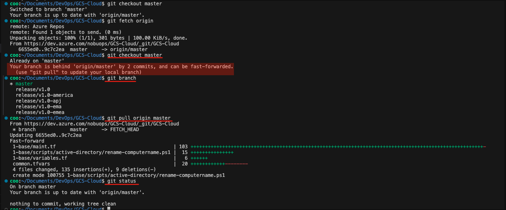

Move to “master”
Open the terminal (press Ctrl+`) and run:
git checkout master
If master isn’t checked out locally yet, do:
git fetch origin
git checkout master
If “master” was not updated in the local branch
If the branch switched successfully to master, but the files in your working directory didn’t update as expected, it could be one of these cases:
- Confirm You’re on the Correct Branch Run this to verify:
git branch
You should see something like this. The asterisk * indicates your current branch.
* master
release/v1.0-america
- Ensure You Pulled the Latest Changes. Fetching doesn’t update your local branch.
# That will update your local master branch with the latest from the remote.
git pull origin master
- Check for Local Changes Preventing Switch
# If you had local changes, Git might have silently blocked switching some files.
git status
If you see uncommitted changes, you can:
-
Stash them: git stash
-
Or discard them: git reset –hard
Then try switching branches again:
git checkout master
git pull origin master
